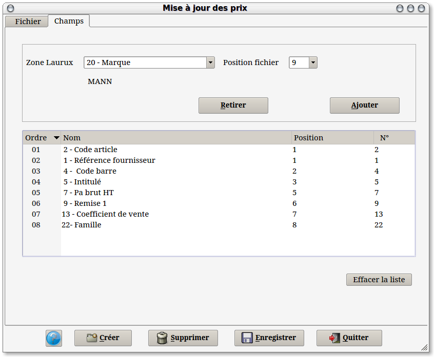
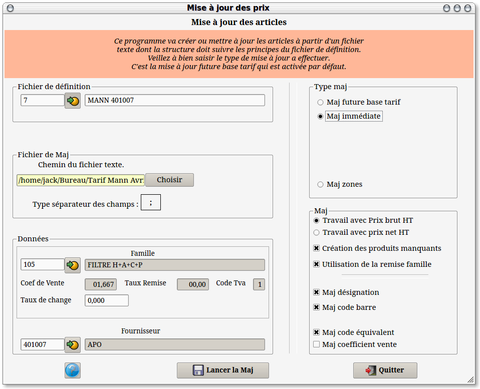
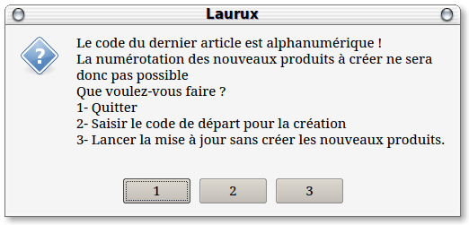

~ Comptabilité et Facturation Laurux ~ |
||
|
|
L'écran de paramétrage des fichiers de
définition (Stock ==> Tarifs ==> Table des fichiers d'import)
utilisés pour les mises à jour des tarifs comporte deux onglets.
Le premier
onglet servira a créer les nouveaux fichiers et a visualiser ou
modifier les fichiers existants.
Pour créer un
nouveau fichier de définition on cliquera sur le bouton "Créer",
puis on saisira le code du fournisseur ainsi que celui de la famille.
Ces deux données seront utilisées si elles n'existent pas dans le
fichier tarif. On saisira ensuite le chemin du fichier tarif puis le
type de séparateurs des champs dudit fichier. Soit un séparateur, en
général un ; (point virgule) soit des champs fixes.
Quelques
lignes du fichier tarif s'affichent dans la fenêtre, ce qui vous permet
de contrôler la structure du fichier.
Pour supprimer un fichier de définition on cliquera sur le bouton "Supprimer".
Pour
enregistrer les données du premier onglet on cliqura sur le bouton "Enregistrer"
NB : Les fichiers tarifs fournis par les
fournisseurs sont des fichiers de type texte ayant généralement
l'extension .txt ou .csv. Si vous recvez un fichier dans un format
spécifique, par exemple un fichier généré par un tableur, il faudra le
transformer en fichier texte car Laurux ne sait pas travailler avec ce
type d'enregistrement.

Le deuxième onglet va servir a faire une
concordance entre chaque zone du fichier avec une zone de la
table des articles de Laurux.
En premier on
va saisir la zone Laurux à l'aide du combobox qui contient les champs
de Laurux puis on va donner la position correspondante à l'intérieur du
fichier tarif. La donnée du champs séléctionné s'affichera dans
une ligne au-dessous afin de contrôler si la saisie est correcte. Si
tout est bon on cliquera sur le bouton "Ajouter" pour mémoriser notre saisie et on procédera ainsi pour chaque champs du fichier tarif.
Pour supprimer une ligne soit on la
sélectionne et on appuie sur la touche" SUPPR" du clavier, soit on la sélectionne et on clique sur le bouton "Retirer".
Pour remettre toute la liste à blanc on cliquera sur le bouton "Effacer la liste".
NB : Le fait de cliquer sur le bouton "Ajouter" enregistrera la nouvelle ligne dans la base.

Ce programme (Stock ==> Tarifs
==> Import et mise à jour article) va servir a créer les nouveaux
articles, a mettre à jour les prix des produits et a la mise à jour de
certaines zones des fiches produits.
En premier on saisira le fichier
de définition avec lequel on souhaite travailler. Tous les
renseignements fournis lors de la création du fichier vont s'afficher
(Nom et chemin du fichier tarif, fournisseur et famille ainsi que les
séparateurs utilisés par le fichier tarif.
Le coefficient de vente, le taux
de remise ainsi que le code tva qui s'affichent sont des données issues
de la famille et seront utilisés si le fichier tarif ne les possèdent
pas.
Si un fournisseur étranger vous fournit
un tarif dans une devise autre que l'Euro, vous pouvez utiliser la zone
"Taux de change". Le programme recalculera les prix en utilisant cette valeur.
Il faudra ensuite saisir le type de mise à jour a effectuer. Soit on fait une mise à jour de la zone future base tarif de la fiche article, soit on fait une mise a jour immédiate. La première solution permet de sortir les étiquettes et de préparer le magasin avant d'effectuer la mise à jour des prix (Stock ==> Tarifs ==> Future base tarif). Cette solution est préférable dans le cas d'un magasin de détail ou les prix sont affichés.
Si le fournisseur vous donne un tarif en prix brut
ou en prix net, il faudra cocher le bouton had hoc.
Si
aucune remise n'est renseignée dans le fichier tarif alors le programme
utilisera la remise de la famille pour calculer le PAHT brut ou le PAHT
net. Ce sont également le coefficient et la Tva issus de la famille qui
seront utilisés pour calculer les prix de ventes HT et TTC des produits.
Si vous ne souhaitez pas faire de mise à jour de la désignation alors
il faudra décocher le bouton "Maj désignation".
Si vous ne souhaitez pas mettre à jour le code barre
alors il faudra décocher le bouton "Maj code barre".
Si la gestion du prix de vente
conseillé est activée et si vous ne souhaitez pas mettre à jour cette
zone
alors il faudra décocher le bouton "Maj prix de vente conseillé".
Si le fournisseur vous remet un fichier contenant
votre remise alors il faudra décocher le bouton "Utilisation de la remise famille".
Enfin, si
vous souhaitez faire une mise à jour des prix sans créer les nouvelles
références alors il faudra décocher le bouton "Création des produits manquants".
Note concernant la création des nouveaux produits.
Si le fichier tarif ne contient
pas de zone code article alors la codification des nouveaux produits va
suivre le schéma ci-dessous.
Si le dernier code existant dans
la table des produits est numérique alors la codification sera
incrémentielle.
Ex : Dernier code créé 101, alors la création des nouveaux articles commencera à 102.
Si le dernier code est
alphanumérique alors un message d'alerte
préviendra l'utilisateur et lui demandera de choisir entre trois propositions.

Si la base est vierge alors la
codification débutera à 10000.
Si le fichier tarif contient
une zone ayant une relation avec la zone code article de Laurux alors
les nouveaux produits seront créés avec ce code.
Le programme effectue les contrôles suivants avant toute création ou mise à jour :
Vérification de l'existence du
code barre. Si le code barre n'existe pas alors le programme controlera
l'existence de la référence fournisseur pour le fournisseur
selectionné. Si la référence fournisseur n'existe pas alors le produit
sera créé.
Si le code barre ou si la
référence fournisseur existe déjà alors le programme effectuera les
mise à jour demandées.
Note concernant la mise à jour des codes barres.
Lors de la création d'un
produit, le code barre est renseigné dans la zone "Code barre" de la
fiche du produit, il devient donc le code barre principal c'est à dire
celui qui apparait lors d'un appel de la fiche. Ce code barre est
également créé dans la table des codes barres.
Lors d'une mise à jour, c'est la
table des codes barres qui sera mouvementée mais pas la fiche du
produit, ainsi le code barre principal ne sera donc pas affecté.
----------------------------------------------------------------------------------------------------------------------